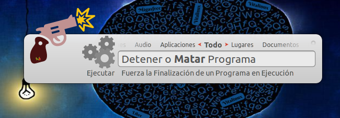

¡¡Importante!!
¡Qué importantes son la RAM y CPU!
De todas las características hardware de un equipo hay dos que merece la pena señalar por las siguientes razones:
- RAM: Cuando lanzamos/abrimos una aplicación o programa (p.e. firefox, libreoffice, gimp, etc.) este se copia del disco duro a la memoria RAM del ordenador, para posteriormente ser leida y ejecutada por el procesador o CPU del equipo. Es decir, nuestra CPU nunca lee los programas a ejecutar directamente del disco duro sino de la memoria RAM, ya que esta última es mucho más rápida y por tanto mucho más eficiente. Según esto, a medida que vamos abriendo aplicaciones estas se van copiando en memoria RAM y la van agotando. Por esta razón, la cantidad de memoria RAM determina la cantidad de programas que pueden ser ejecutados simultáneamente garantizando fluidez en su rendimiento. En el momento en que la memoria RAM se llena, para poder seguir abriendo aplicaciones es necesario intercambiar o llevar parte de su contenido al disco duro provocando de esta forma un decremento en su rendimiento de manera notable apreciando perdida de fluidez y de tiempo de respuesta. A medida que se cierran aplicaciones abiertas estas son eliminadas de la memoria RAM dejando espacio libre para que posteriormente pueda ser ocupado por otras aplicaciones que sean lanzadas/abiertas.
Además, al hilo de todo lo anterior, podemos deducir que la rapidez de nuestro disco duro determinará lo rapidez con que se copia en memoria RAM y empieza a ejecutarse el programa por parte de la CPU. Por esa razón, el uso de discos duros SSD (de estado sólido, no mecánicos) garantiza que las aplicaciones se carguen más rápidamente proporcionando una sensación de fluidez mucho mayor. - CPU o procesador: Es el elemento principal de un ordenador. Su velocidad de computo y potencia de procesamiento determinará lo rápido que se leen y ejecutan los programas que se han cargado en memoria RAM, determinando el rendimiento global del sistema. Mientras que los procesadores de baja gama (Pentium, Atom, Celeron, AMD-E, etc.) disparan su consumo y se saturan a poco que se les pide, los procesadores de alta gama (i3, i5, i7, etc.) son capaces de ejecutar aplicaciones pesadas sin alcanzar el 50% de su potencia. En concreto, el consumo de CPU se incrementa cuando lanzamos/abrimos una aplicación y cuando realizamos acciones o cambios en la aplicación ya abierta. Si las aplicaciones están abiertas pero en reposo (el usuario no lleva a cabo ninguna acción) la CPU estará totalmente ociosa. Según todo lo anterior, y a modo de reflexión, cabría señalar que muchos de los modelos de mini portátiles que se repartieron en centros educativos hace más de una decada bajo el amparo del programa Escuela 2.0 tienen un CPU muy flojita (Atom) y poca memoria RAM (512/1024MB), lo que provoca que se saturen en seguida. Cambiar el disco duro HDD que incorporan por un SSD y ampliar su memoria RAM aportará mejoras en el arranque del sistema operativo, en la respuesta del equipo al lanzar aplicaciones y permitirá tener más aplicaciones abiertas sin penalizar en su rendimiento, pero siempre habrá que ser conscientes de que la CPU o procesador, al no poderse cambiar/mejorar, es el que es y se seguirá atragantando/saturando ante aplicaciones pesadas o que demanden mucho computo.

Tarea
3.2
Lanzar Aplicaciones y efecto sobre la RAM y CPU del Sistema
Requisitos: Es necesario disponer de un equipo físico o virtual con Vitalinux instalado, además de haber leido los apartados referentes a Cómo lanzar Aplicaciones e información del Widget del Escritorio
Como tarea te proponemos repasar algunas de las formas descritas para lanzar aplicaciones, y al mismo tiempo aprovechar para conocer que efecto tiene esto sobre la CPU y la RAM del sistema operativo Vitalinux gracias a la información suministrada por el Widget ubicado en el Escritorio. En concreto se sugiere realizar las siguientes acciones:
Nota sobre las capturas a presentar: No es necesario que presentes las capturas de cómo lanzas las aplicaciones usando los diferentes métodos propuestos...de hecho en algún caso será incompatible que lances la aplicación y a la vez tomes la captura de la pantalla
Nota sobre las capturas a presentar: No es necesario que presentes las capturas de cómo lanzas las aplicaciones usando los diferentes métodos propuestos...de hecho en algún caso será incompatible que lances la aplicación y a la vez tomes la captura de la pantalla
- Inicia sesión gráfica en Vitalinux, espera a que finalice la comunicación con Migasfree (el icono de Migasfree que hay en la parte derecha del panel inferior izquierdo se pondrá en color grisaceo), y anota la cantidad de memoria RAM y CPU consumidas por el sistema operativo en reposo (sin abrir o lanzar ninguna aplicación) gracias a la información aportada por el Widget del Escritorio.
- Despliega el Menú de Inicio Clásico (al estilo de Windows XP y Windows 7), busca en en el submenú o categoría de aplicaciones Sonido y Vídeo la aplicación Openshot y abrela. Esta aplicación te permite crear un vídeo a partir de imágenes, vídeos y música. Advierte que todas las aplicaciones estan categorizadas en función de su utilidad (Educación, Gráficos, Internet, Oficina, etc.). Minimiza la aplicación y observa el Widget del Escritorio para conocer en cuanto ha aumentado la memoria RAM y CPU del sistema para saber cuanto consume dicha aplicación (la finalidad es ver como afecta a los recursos del sistema el lanzar una aplicación, puede ser openshot o la que tu prefieras).
- Teclea CONTROL+ESPACIO, escribe Navegador Firefox y confirma con la tecla Intro para abrir o lanzar dicha aplicación. Advierte que esta forma de lanzar aplicaciones a través de Albert es mucho más rápida, cómoda, intuitiva y eficiente que acceder a ella a través del Menú de Inicio Clásico (categoría Internet). Al igual que en el caso anterior, minimiza la aplicación y observa el Widget del Escritorio para conocer en cuanto ha aumentado la memoria RAM y CPU del sistema para saber cuanto consume el afamado navegador Web. Abre varias pestañas (teclea CONTROL+T) y advierte su efecto sobre la memoria RAM y CPU.
- Otra forma muy eficiente de lanzar una aplicación es a través de un atajo de teclado. Un buen ejemplo es teclear la Tecla de Windows (tecla que se encuentra junto al ALT izquierdo)+E para acceder al Explorador de Archivos de Vitalinux. Comprueba su funcionamiento y anota igualmente su consumo de CPU y RAM.
-
En ocasiones, al igual que en Windows, puede quedarse colgada alguna aplicación sin poder cerrarla. En esos casos convendría Matar la aplicación como se sugiere a continuación. Suponiendo que todavía mantienes abiertas las aplicaciones anteriores teclea CONTROL+ESPACIO y escribe detener o matar programa. Al confirmar con la tecla Intro podrás advertir que el puntero del ratón cambia de forma y que al pinchar sobre cualquier aplicación abierta provoca su cierre (¡¡Cuidado por que si pinchas sobre el Escritorio también cerrarás/matarás a éste!!).

- Haz una breve reflexión, si lo consideras necesario, sobre la tarea realizada. Es importante advertir que hay aplicaciones que consumen prácticamente la misma cantidad de recursos que el propio sistema operativo (los navegadores Web modernos Firefox o Chrome son un ejemplo de ello). Este es un aspecto sumamente importante ya que Vitalinux es un sistema operativo ligero con la finalidad de poder reutilizar equipos antiguos, pero de poco sirve que el sistema operativo lo sea si las aplicaciones que lanzamos sobre él no lo son, el equipo se acabará saturando al poner al límite sus recursos (memoria RAM o CPU). Es decir, en equipos con pocos recursos además de hacer uso de un sistema operativo ligero también deberíamos hacer uso de aplicaciones que lo fueran (existen alternativas ligeras a toda aplicación. Por ejemplo, Midori es un navegador Web que sería una alternativa ligera a Firefox o Chrome).
Formato de Entrega: En un documento ofimático escribe y pega las fotos o capturas de pantalla necesarias para justificar todo lo que se te pide a continuación. Si es posible expórtalo a formato PDF para garantizar su portabilidad, y adjúntalo como respuesta a la tarea solicitada. Por tanto, envía al tutor un único archivo .pdf que se nombrará siguiendo las siguientes pautas: apellido1_apellido2_nombre_TareaX.pdf.
Asegúrate que el nombre no contenga la letra ñ, tildes ni caracteres especiales extraños. Así por ejemplo la alumna Begoña Sánchez Mañas, debería nombrar esta tarea como: sanchez_manas_begona_Tarea3.2.pdf
Asegúrate que el nombre no contenga la letra ñ, tildes ni caracteres especiales extraños. Así por ejemplo la alumna Begoña Sánchez Mañas, debería nombrar esta tarea como: sanchez_manas_begona_Tarea3.2.pdf